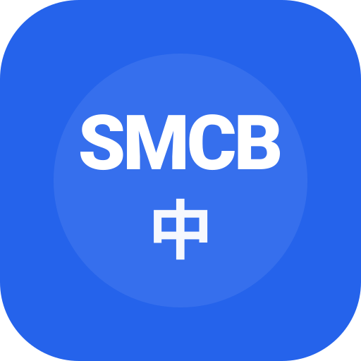

각 시안을 192·96·48·28px에서 비교하고, 하단에는 헤더(28px)에서의 모습을 미리 봅니다.
현재 (기준)
파란 정사각형 · "SMCB" + "中" — 정보량이 두 줄로 분산되어 작은 크기에서 가독성↓
시안 1 · 성경+中
펼친 성경책 위에 中 — 컨셉 직관적, 디테일이 많아 작은 크기 가독성 주의
시안 2 · 십자가+经
배경 십자가 + 큰 经(경) 한 글자 — 기독교+성경 정체성 강함, 한 글자라 작은 사이즈에도 또렷
시안 3 · 모노그램 리파인
현재 디자인 계열 — SMCB + 中级(노란) + 작은 십자가 — 정보량 많아 28px엔 부담
시안 4 · 서예 中 + 인장
한지 배경에 붓글씨 中, 우하단 빨간 인장(圣) — 동양 정서 강함, 색감이 톤과 다름
시안 5 · 미니멀 中 + 십자가 점
흰 바탕 + 파란 中 + 우상단 작은 빨간 십자가 점 — 가장 단순, 작은 크기 가독성↑
시안 6 · SMCB 강조 + 中 보조
SMCB를 크게 강조(108) + 中을 보조로 작게(92) + 라운드 사각형 — SMCB 식별 우선

96시안 7 · SMCB 전용 (단일 라인)
中 제거, SMCB만 큼직하게(148) — 작은 사이즈에서 가장 또렷, 정체성 단일화